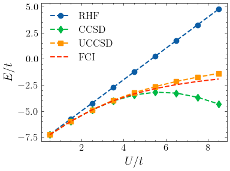

Hubbard Model by UCCSD#
Overview#
In this notebook, we will demonstrate how to use the from_integral method of the UCC class to solve half-filled Hubbard model
\[\hat H = -t \sum_{j, \sigma} (\hat c^\dagger_{j+1, \sigma} \hat c_{j, \sigma} + \hat c^\dagger_{j, \sigma} \hat c_{j+1, \sigma}) + U \sum_j \hat n_{j↑} \hat n_{j↓}\]
using UCCSD. The results show that UCCSD is better than CCSD in capturing strong correlation, yet the accuracy is still not satisfactory.
We also highlight that the from_integral method is a flexible interface for cutomized Hamiltonian.
Setup#
[1]:
import numpy as np
from tencirchem import UCCSD
# number of sites
n = 6
# half filled
n_elec = n
# scan U/t from 0.5 to 8.5
t = 1
U_array = np.linspace(0.5, 8.5, 9)
U_array / t
[1]:
array([0.5, 1.5, 2.5, 3.5, 4.5, 5.5, 6.5, 7.5, 8.5])
Calculate#
[2]:
# stores results
e_hf_list = []
e_ccsd_list = []
e_uccsd_list = []
e_fci_list = []
for U in U_array:
print(f"Calculating U = {U}")
# set the integrals
int1e = np.zeros((n, n))
for i in range(n - 1):
int1e[i, i + 1] = int1e[i + 1, i] = -t
int1e[n - 1, 0] = int1e[0, n - 1] = -t
int2e = np.zeros((n, n, n, n))
for i in range(n):
int2e[i, i, i, i] = U
# do the calculation
uccsd = UCCSD.from_integral(int1e, int2e, n_elec)
uccsd.kernel()
print(uccsd.opt_res.message)
# record result
e_hf_list.append(uccsd.e_hf)
e_ccsd_list.append(uccsd.e_ccsd)
e_uccsd_list.append(uccsd.e_uccsd)
e_fci_list.append(uccsd.e_fci)
Calculating U = 0.5
CONVERGENCE: REL_REDUCTION_OF_F_<=_FACTR*EPSMCH
Calculating U = 1.5
CONVERGENCE: REL_REDUCTION_OF_F_<=_FACTR*EPSMCH
Calculating U = 2.5
CONVERGENCE: REL_REDUCTION_OF_F_<=_FACTR*EPSMCH
Calculating U = 3.5
CONVERGENCE: REL_REDUCTION_OF_F_<=_FACTR*EPSMCH
Calculating U = 4.5
CONVERGENCE: REL_REDUCTION_OF_F_<=_FACTR*EPSMCH
Calculating U = 5.5
CONVERGENCE: REL_REDUCTION_OF_F_<=_FACTR*EPSMCH
Calculating U = 6.5
CONVERGENCE: REL_REDUCTION_OF_F_<=_FACTR*EPSMCH
Calculating U = 7.5
CONVERGENCE: REL_REDUCTION_OF_F_<=_FACTR*EPSMCH
Calculating U = 8.5
CONVERGENCE: REL_REDUCTION_OF_F_<=_FACTR*EPSMCH
Plot#
[3]:
from matplotlib import pyplot as plt
import mpl_config
plt.plot(U_array, e_hf_list, marker="o", label="RHF", linestyle="--")
plt.plot(U_array, e_ccsd_list, marker="d", label="CCSD", linestyle="--")
plt.plot(U_array, e_uccsd_list, marker="s", label="UCCSD", linestyle="--")
plt.plot(U_array, e_fci_list, marker=" ", label="FCI", linestyle="--")
plt.legend()
plt.xlabel("$U/t$")
plt.ylabel("$E/t$")
plt.savefig("hubbard.pdf")

[ ]: